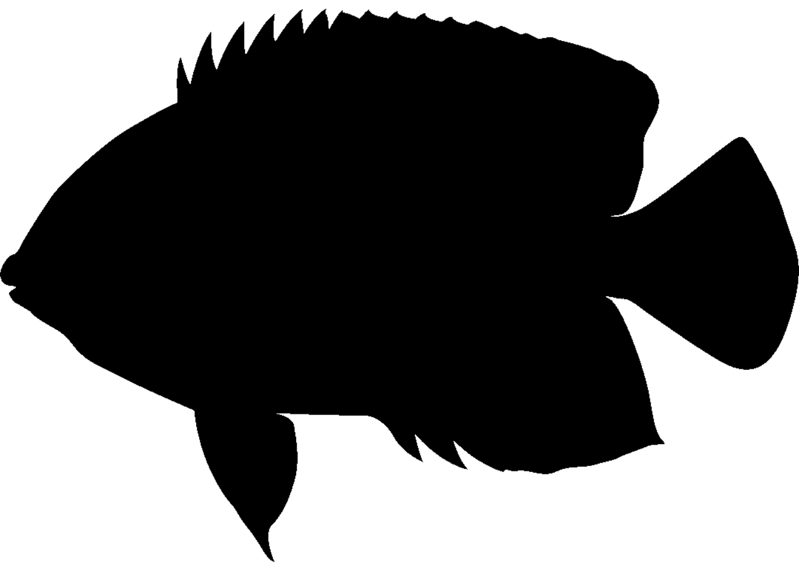

The fishualize package provides color scales for plotting in R based on nature’s most stunning and colorful organisms: teleost fishes (with a few chondrichthyan cameos). #TeamFish in its colorful glory.
Installation
install.packages("fishualize") library(fishualize)
or for the latest development version:
library(devtools) devtools::install_github("nschiett/fishualize", force = TRUE) library(fishualize)
The color scales
The package contains one scale per species, defined by five dominant colors. The number of fishualized species will expand over time. For a list of fish species that are currently available, run fish_palettes().
A visual overview of the color scales can be found here.
To visualize a fish color palette, you can run fishualize() and specify your choice.

fishualize(n = 8, option = "Hypsypops_rubicundus", end = 0.9)

Usage
The fish() function produces the fish color scale based on your favorite species, which can be specified using ‘option’ = “Your_favorite” or fish_palettes()[] with the number of your species specified.
For base R plots, use the fish() function to generate a palette:


ggplot2
The package also contains color scale functions for ggplot2 plots: scale_color_fish() and scale_fill_fish().
library(ggplot2) library(rfishbase) # load data for plotting # 1. Create list of species names currently featured in fishualize spp <- fishualize::fish_palettes() # 2. Get data on the included species from FishBase using the rfishbase package dt <- rfishbase::species(gsub("_"," ", spp))
## Warning: `data_frame()` is deprecated as of tibble 1.1.0.
## Please use `tibble()` instead.
## This warning is displayed once every 8 hours.
## Call `lifecycle::last_warnings()` to see where this warning was generated.dt$Importance = factor(dt$Importance, levels = c("highly commercial", "commercial", "minor commercial", "subsistence fisheries", "of no interest")) # plot bars with discrete colors using color scheme provided by Scarus quoyi ggplot(dt[!is.na(dt$Importance),]) + geom_bar(aes(x = Importance, fill = Importance)) + scale_fill_fish_d(option = "Scarus_quoyi") + theme_bw() + theme(axis.text.x= element_blank() )

# plot points with continuous colors provided by Hypsypops rubicundus ggplot(dt) + geom_point(aes(x = Length, y = Vulnerability, color = Vulnerability), size = 3) + scale_color_fish(option = "Hypsypops_rubicundus", direction = -1) + theme_bw()

# get ecological information from FishBase data <- rfishbase::ecology(gsub("_"," ", spp), c("SpecCode","FeedingType", "DietTroph")) %>% dplyr::left_join( rfishbase::species(gsub("_"," ", spp))) # plot boxplots of length across feeding groups using discrete colors provided by Cirrilabrus solorensis ggplot(data[!is.na(data$FeedingType),]) + geom_boxplot(aes(x = FeedingType, y = log(Length), fill = FeedingType )) + scale_fill_fish_d(option = "Cirrhilabrus_solorensis", labels = c("invertivore", "herbivore", "carnivore", "planktivore", "omnivore")) + theme_bw() + theme(axis.text.x= element_blank() )

# examine relationships between size and trophic level with vulnerability as a continuous color scheme provided by Lepomis megalotis ggplot(data) + geom_point(aes(x = Length, y = DietTroph, color = Vulnerability), size = 6, alpha = 0.9) + scale_color_fish(option = "Lepomis_megalotis", direction = -1) + theme_bw()

Colors can also be used with maps. Here are several examples of discrete and continuous color schemes on a world-map.
library(ggplot2) #get dataset of the world's countries world <- rnaturalearth::ne_countries(scale = "medium", returnclass = "sf") #plot worldmap with each country's estimated population as a continuous colors scale based on the reverse colors of Whitley's Boxfish Ostracion whitleyi ggplot(data = world) + geom_sf(aes(fill = pop_est)) + scale_fill_fish(option = "Ostracion_whitleyi", direction = -1) + theme_bw() + theme(legend.position = "top")

#plot worldmap with each country's estimated gdp based on the colors of the Sailfin Tang Zebrasoma velifer ggplot(data = world) + geom_sf(aes(fill = gdp_md_est)) + scale_fill_fish(option = "Zebrasoma_velifer", trans = "sqrt") + theme_bw()+ theme(legend.position = "top")

#same example as above but starting at a lighter point of the color scale ggplot(data = world) + geom_sf(aes(fill = gdp_md_est)) + scale_fill_fish(option = "Zebrasoma_velifer", trans = "sqrt", begin = 0.3, end = 1) + theme_bw()+ theme(legend.position = "top")

#plot worldmap again, this time with countries colored by their respective regional affiliation using the colors of the Clown coris *Coris gaimard* and 'discrete = TRUE' ggplot(data = world) + geom_sf(aes(fill = region_wb)) + scale_fill_fish(option = "Coris_gaimard", discrete = TRUE) + theme_bw()+ theme(legend.position = "top")

##same map with colors reversed ggplot(data = world) + geom_sf(aes(fill = region_wb)) + scale_fill_fish(option = "Coris_gaimard", discrete = TRUE, direction = -1) + theme_bw()+ theme(legend.position = "top")

#another map with countries colored by economic status using the colors of the Mandarinfish *Synchiropus splendidus* ggplot(data = world) + geom_sf(aes(fill = income_grp)) + scale_fill_fish(option = "Synchiropus_splendidus", discrete = T, alpha = 0.8) + theme_bw()+ theme(legend.position = "top")

#same map as above but with a narrower color palette in discrete values ggplot(data = world) + geom_sf(aes(fill = income_grp)) + scale_fill_fish(option = "Synchiropus_splendidus", discrete = T, alpha = 0.8, begin = 0.3, end = 1) + theme_bw()+ theme(legend.position = "top")

Fish shapes
fishualize 2.0 enables you to add fish silhouettes to a ggplot object with the function add_fishape(). To get an overview of all available silhouettes, run fishapes().
# Default shape ggplot() + add_fishape() + theme_void()

# Species are specified with family and option # The color and transparency of the shape is chosen with fill and alpha # xmin, xmax, ymin, and ymax indicate the position of the fish silhouette ggplot(diamonds)+ geom_bar(aes(cut, fill = cut)) + scale_fill_fish_d(option = "Naso_lituratus") + add_fishape(family = "Acanthuridae", option = "Naso_unicornis", xmin = 1, xmax = 3, ymin = 15000, ymax = 20000, fill = fish(option = "Naso_lituratus", n = 4)[2], alpha = 0.8) + theme_bw()

Alternatively, you can specify the coordinates according to a relative scale (between 0 and 1; with scaled = TRUE). In this case, parameters xlim and ylim indicate the x and y limits of x and y. This is useful to keep the fish silhouette positioned identically across graphs with different scales.
ggplot(diamonds)+ geom_bar(aes(cut, fill = cut)) + scale_fill_fish_d(option = "Naso_lituratus") + add_fishape(family = "Acanthuridae", option = "Naso_unicornis", xmin = 0.3, xmax = 0.7, ymin = 0.8, ymax = 1, scaled = TRUE, xlim = c(0.5, 5.5), ylim = c(0, 21000) , fill = fish(option = "Naso_lituratus", n = 5)[3], alpha = 1) + theme_bw()

Contribute
Love it? Missing your favorite species? Check out how you can contribute to this package here
Citation
To cite package fishualize in publications use:
Nina Schiettekatte, Simon Brandl and Jordan Casey (2019). fishualize: Color Palettes Based on Fish Species. R package version 0.1.0. https://CRAN.R-project.org/package=fishualize
A BibTeX entry for LaTeX users is
@Manual{, title = {fishualize: Color Palettes Based on Fish Species}, author = {Nina Schiettekatte and Simon Brandl and Jordan Casey}, year = {2019}, note = {R package version 0.1.0}, url = {https://CRAN.R-project.org/package=fishualize}, }
Contributions
JMC, SJB, and NMDS created the color palettes, SJB drew the fish silhouettes, which are freely available here. NMDS wrote the functions. SJB, JMC, and NMDS wrote the documentation. A big thanks to everyone that submitted additional color palettes via GitHub: Jindra Lacko, Andrew Steinkruger, Adam Smit, pomboal, anhsmith, Kent Sorgon, Jean-Pierre Rossi, jdittrich
Credits
The initial structure of this package was inspired by the harrypotter package by Alejandro Jiménez: https://github.com/aljrico/harrypotter